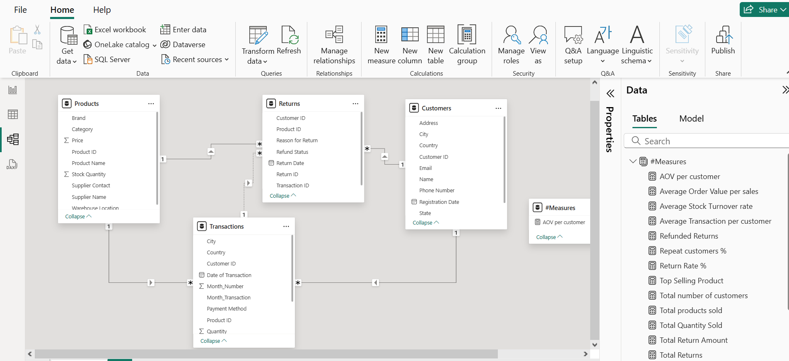

Featured Projects

Enterprise Retail Intelligence - Data Modelling and Analysis
Integrated sales data to provide real-time insights into retail performance across regions and products.
View Project
Gadget Sales Dashboard – Regional, Rep & Payment Insights
Visualized financial metrics to aid strategic decision-making and profitability tracking.
View Project
Pharmaceutical Sales Dashboard – Product Performance & Regional Profitability
Analyzed customer data to uncover trends and inform targeted marketing strategies.
View Project